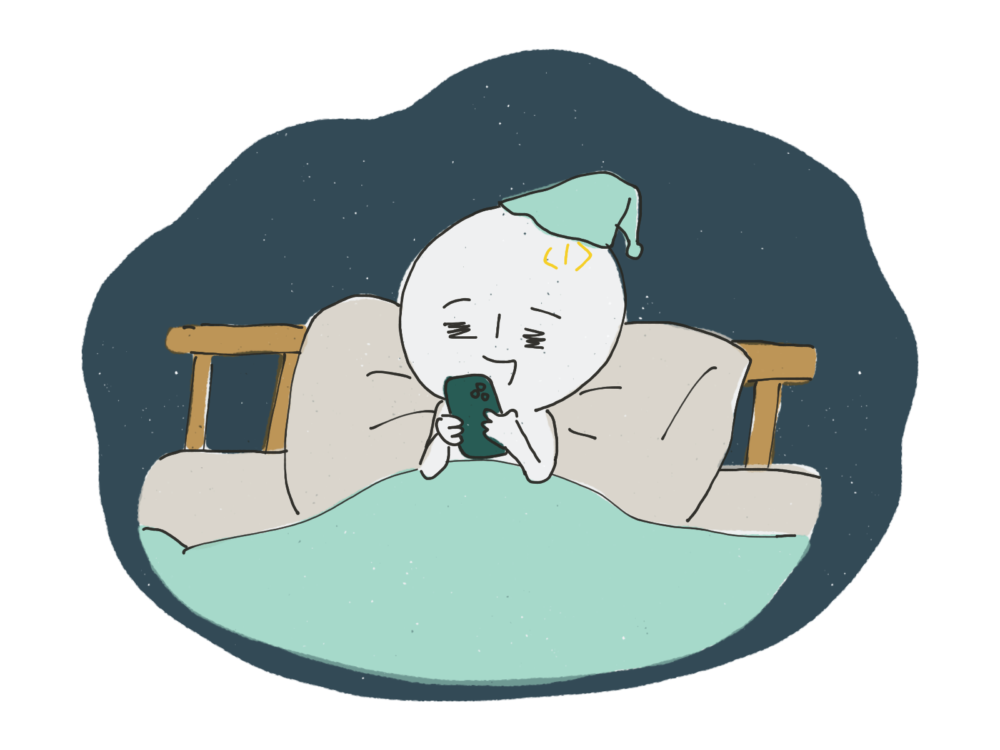

일분이를 소개한다.
1분코딩의 마스코트이며 제주 바닷가에 사는 개발자인
일분이는 코로나19 이전부터 재택근무를 해왔지만, 코로나19는 일분이의 생활에도 변화를 주었다.
아침에 일어나면, 커피를 내리며 정신을 차린다.
사회적 거리두기를 위해 한적한 바닷길쪽으로 러닝을 한다.
가끔 만나는 바닷새와 눈인사를 나눈다.
맞다, 트위터의 걔.
운동을 마치고 집에 돌아와 작업을 시작한다.
밥은 집에서 먹거나, 테이크아웃이 가능한 메뉴를 골라 탁 트인 야외에서 먹는다. 물론 사회적 거리두기를 하기 위함이다.
보통 오후 작업은 집 근처의 일하기 좋은 카페에서 해왔지만, 코로나19 이후에는 집에서 하는 날이 많아졌다.
라면 매니아 답게 유튜브로 라면소녀 채널을 보며 간식으로 라면을 먹는다.
자기 전, 가끔 요가소년 채널을 보며 요가를 한다.
일과를 마치고 폰질을 한다 잠자리에 든다.